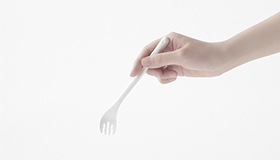
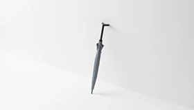
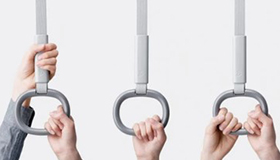
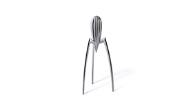
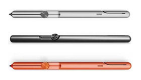
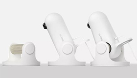

设计产品随笔
-

【日清杯面专用叉 THE FORK】 采用环保塑料材质，把叉头扭成128°弯曲得造型。用于更方便得食用杯面。符合吃杯面的手臂姿势和活动方式，找到128°弯曲的叉子造型，并在叉子前端巧妙得歪扭一下，让叉子能更顺利地深入杯面 捞出面条。叉子前端完美配合杯身曲线，贴合得刚刚好，让人不错过任何一根面条。
-

【Nendo伞】 关于雨伞还有一个烦恼就是很难被靠在墙边，于是 Nendo 将它的伞把设计成一个开口状的半三角形，这样就可以很容易被立在墙边了，也可以挂在桌角。带着雨伞回到室内，很人性化的设置使这个问题能轻而易举的解决掉，且适用于多种人群以及多种场合，将雨伞合理得安放,解决了平时放伞难的问题。
-

【公交车把手】 公交车拉环设计得太高，女生可能会很难抓握。设计得太矮，对于男生来说它的作用反而不大了。所以该款拉环在上方设计了可以抓握的地方，以适应更大范围身高的人群使用，在公车环境中运用自如，简洁优雅的造型与公交车环境十分适合，人性化的设计使得他手把设计有更大的利用率。
-

【外星人榨汁机】 柠檬榨汁机的艺术价值也许比它的实用价值更大，与其说它是一件生活用品，不如说它更像一件雕塑艺术品。因为不管这件作品实不实用，它已经成为艺术品供人收藏。它那抛光的铸铝结构产生一种完美无缝的新潮美感，使人联想到早期的太空飞船和外星机器人的概念，不过它看上去也很性感。
-

【Discus Pen】 握笔的部分并没有设计成舒适的材质，而是选择为了整体的美感使用了金属材质，因此它并不适合长时间的握笔写字，适合在偶尔书写的环境中使用。因此这种设计显然不单单是为了书写而用的笔，它肯定是为了满足其他方面的消费需求，比如心理需求、社交需求等。既有创意又很实用。
-

【M宝宝监测器】 M宝宝就像一只栖息在树枝上的小鸟，在设计过程中向婴儿歌唱，提取并简化了小鸟的关键特征，创造出这种独特的产品形式，使环境、产品和人之间的互动更加有趣。检测器停在婴儿床的床头就像小鸟停在枝头 照顾宝宝。此设计产品很人性化，不仅考虑到了孩子和母亲，而且在环境交互上也是做的非常好的。